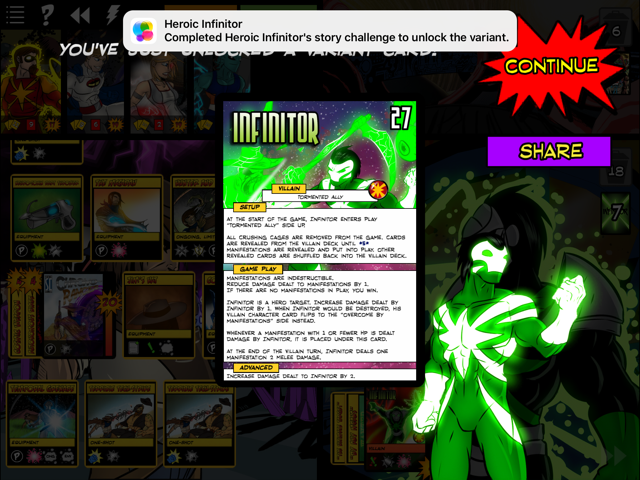

PH
Phantom5613
2016-04-13 18:37 UTC
#1
I'm going to susspect that Captain Cosmic must be in your team and make the winning strike, and that there must not be any manifestations in play.
I'm going to susspect that Captain Cosmic must be in your team and make the winning strike, and that there must not be any manifestations in play.
Most of the villain unlocks have two steps.
I'm gonna guess Progeny is involved in the prerequisite, since he's related to OblivAeon.
True, but not all of them have two steps. I'm suggesting the easier things first before we make ourselves crazy.
I think having Cosmic in the lead, then using Construct Cataclysm to destroy all Constructs and Manifestations, and probably also to deal the killing blow to Infinitor.
Well, it's not an unlock given by healing Infinitor for 20+ HP via Vitality Conduit (as a single attempt).
He shouldn't be available for unlock yet
The first step will be "defeat Infinitor."
And if so, that will be defeat Infinitor after Heroic Infinitor becomes available, so there's no point in doing so yet, as it won't count.
I would think you need to get him to snap out of his delusions right? So maybe make him incap. himself or one of his constructs incap him. Using a Wrest the mind or damage redirection effect. CC needs probably to be on the team.
Without knowing much baout the mechanics of both, this is what I figured you need to do.
I just unlocked him by finishing him with an Autonomous Blade which followed a strike from a Cosmic Weapon wielded by the Visionary, while in the Enclave of the Endlings.
My hypothesis is that you need to finish him with damage from a construct.
Note: I had already defeated all the other villains from Wrath, but this was my first game against Infinitor on my tablet. I had also played in each environment from the set and I'd used both heroes.
Did Infinitor have any Manifestations in play?
He had 1 Ocular Swarm left in play.
And was he on his front side or rear side?
He was on his front side, although he had flipped several times by that point.
Just saw Technomagus get the Variant by finishing off Infinitor on his flipped side. Using just Mr. Fixer's base power, he used the Autonomous Blade to hack off the last 2 points of HP. There were no Manifestations in play when the damage occurred.
I just unlocked him. I had one manifestation in play, he didn't flip at all, and much like the others, the autonomous blade did the finishing blow. Also, Captain Cosmic was the leader
Has anyone unlocked him using a different construct to deal the damage, like the one that deals damage when it’s hit?
Wasn't me, but I heard someone unlocked him with the buffer doing the last damage.
Gonna suggest this is the unlock:
Defeat Infinitor with Captain Cosmic in the lead, with the last damage dealt by a construct on any character besides Captain Cosmic.
If someone tries this but doesn't get him, let us know.
No dice. Defeated Infinitor with CC, Legacy, DW Fixer, Haka in Enclave. Autonomous Blade on Haka dealt the final blow. Fixer was incapped.
If it's any help, I did both lose to and beat infinitor before unlocking him
Maybe try this with no incaps, and having lost to him once?
I've done it without incaps and CC not in the lead. I don't think I've lost yet.
There could also have to be a certain number of consturcts in play. Here's the screenshot for when I unlocked him.
I also had the following before or during the match:
There were about 8 consturcts out (Legacy had one or two)
I have defeated Infinitor before
I had lost to Infinitor before
Autonomous blade killed him
Autonomous blade was NOT on Cosmic
He did not flip at all (although I know some people got him even if he flipped)
Has there been a game where a construct DIDN'T cause the final blow?
Also, something to think about is the number of constructs out compared to the number of manifestations...
Edit: I'm guessing there needs to be more constructs out than manifestations?
Lost one and then won without anyone incapped. CC in the lead. Autonomous Blade on Fixer dealt the final blow. Unlocked.
When I unlocked him on stream earlier tonight (video), I had played Infinitor a grand total of twice. Once on Wednesday before his unlock was available which I won with 2 characters incapped, but before his unlock was available, and once on stream where I had Mr. Fixer as the last hero deal the final damage via an Autonomous Blade. Here's my theory:
Defeat Infinitor via damage from a Construct. No hero can be incapacitated, and Captain Cosmic must be in the lead.
Apparently CC does not need to be in the lead.
At the time I unlocked him, I hadn't lost to any Wrath villains yet, so losing to Infinitor in a previous game is not a prerequisite.
I had several constructs out, but I don't recall which ones or how many exactly, since I wasn't actively trying to unlock him.
Also, after double-checking the unlock screenshot, I realized that I won on the environment turn, probably with a combination of Wrest the Mind on Orbo damaging Visionary leading to Dynamic Siphon activating Cosmic Weapon, which triggered Autonomous Blade, finishing Infinitor.
Edited after rechecking the screenshot.
Beat Infinitor for the first time. Final damage from a Construct is not a thing. Or if it is, it can't be from a hero that is not Cosmic. Oh and he was in the lead of my team
Maybe a specific manifestation or group of manifestations have to be destroyed? Can people record which manifestations they've seen?
I'm pretty sure when I beat him in that game he had every manifistation in play at one time. He even reshuffled his deck. The only one he had in play when I beat him was Miscreation.
That could be the case. I ran into every manifestation at least once, and when I killed him the only manifestation out was a twisted miscreation
Just unlocked with Autonumous Blade dealing the final damage, from Legacy, CC leading.
Also, Infinitor only had one manifestation out, maybe he can't have more than one in play when incapped?
So my guess is:
Beat Infinitor, with Captian Cosmic at the head of your party. The final blow must be from a construct and there must be only one manifestaion in play.
No unlock.
Five heroes out, Captain Cosmic was not the head, no manifestations in play, Autonomous Blade kill off of Chrono-Ranger.
Legacy, Omnitron-X, Captain Cosmic, Chrono-Ranger, SS Tachyon was the order.
Did you not read my last post. Those are the exact specs I had when I beat him and it didn't unlock. 
Same thing (same team, no manifestations, Autonomous off of Chrono), except CC put in front: Unlocked
(the first was my first fight; the second was my second)
Telling me the condition is likely:
With Captain Cosmic leading the team, defeat Infinitor using the damage from a Construct.
Or a permutation thereof. with no incapacitated heroes, or after every kind of manifestation has played at least once, or not on the heroes turn (both of mine were during villain; someone else stated during environment?)
There were two Manifestations in play when I unlocked.
How many Constructs did you have in play when you struck the final blow?
Dunno. At least one. No more than seventy.
I agree. Don't know if any construct works or just Autonomous Blade. It was during hero turn.
Ugh. Just had Infinitor rip through his entire deck on me in a single turn. Insanity is a bitch, especially when it drops 3 ocular swarms on you.
Unlocked on my first game after the WotC patch. Captain Cosmic, Mr. Fixer, Legacy, and Ra in Enclave of the Endlings. No heroes incapped.
CC had Sustained Influence, Cosmic Crest, two Dynamic Siphons (on Fixer/Legacy), and one Autonomous Blade (on Fixer), with one Cosmic Weapon played and then destroyed by Potent Disruption.
Infinitor had flipped on the second or third turn, then stayed on that side for the rest of the game. One Crushing Cage and all three of each of the other Manifestations had been played and destroyed at some point.
Won during the environment turn with Baahsto > Dynamic Siphon > Strike (to destroy the last Manifestation in play) > Autonomous Blade.
GOT IT! Timed it so that Autonomous Blade won, and it unlocked. That has to be the condition for the unlock. Here's my prediction:
Win a game against Infinitor. Captain Cosmic must be the party leader. The final blow must come from the Construct card 'Autonomous Blade'
I got it under the same conditions. Did with the Prime Wardens, Haka playing clean-up, finished him by using Haka of Battle to boost Savage Mana -- which had eaten most of the Manifestations -- to get him within 2 HP, and then the three Autonomous Blades went off and finished him.
I just tried: Infinitor vs CC, Haka, and Sky-Scraper in Final Wasteland twice.
In the first game, I incapped Infinitor with damage dealt by CC, with several manifestations in play. In the second game, I incapped Infinitor with damage dealt by CC with only one manifestation in play.
Give me a bit, and then I'm going to try the same setup two more times: first with construct damage incapping Infintor with many manifestations in play, and then secondly with construct damage incapping Infinitor with few manifestations in play.
I had no Manifestations in play, and something like 10 or 12 constructs in play.
I had no heroes incapped, CC not in the lead, damage from an Autonomous Blade dealt the killing blow (Bunker dealt the initial damage), he never flipped, Occular Swarm in play, no unlock.
Here's another shot at naming it:
Defeat Infinitor with Captain cosmic in the team with more constructs in play than Manifestations. Autonomous Blade must deal the finishing blow while equipped on not Captain Cosmic. No heroes may be incapacitated.
Edit:Added in the part about no incaps.
Just got him.
Team was Cosmic, Expat, Greatest Legacy, and Chrono-Ranger in the Enclave of the endlings.
Like others, the autonomous blade got the finishing blow.
Infinitor was on his Tormented malefactor side, having flipped and flipped back.
7 manifestations were in play, (i think 4 different types) i don't think I had that many constructs.
I had beaten Infinitor previously. And lost to him.
Everyone on my team was below 10 hp, but none KO'd
No unlock so there's definitely more to it than defeating Infinitor with Cosmic Weapon damage with Captain Cosmic first in the party. Team was Cap, Omni, Chrono, Fanatic, and Sky. at Dok' Thorath.
There were 3 Manifestations out when I won and several Constructs (I think 6). Chrono dealt the final blow with Cosmic Weapon. Infinitor was on his front side but had flipped previously.
Also can someone remind me where to find the log file; I would have posted it for reference, but couldn't remember where to get it.
It might require a team of just Prime Wardens. According to Heroic Infinitor's bio, that's who defeats him.
The folks who have gotten the unlock are getting the kill with Autonomous Blade, not Cosmic Weapon. With Autonomous Blade and wounding Buffer, the CONSTRUCT is the source of the damage. With Cosmic weapon, the hero it's attached to is the source of the damage. I think it has to be from the construct.
My guess (with some things to test):
Defeat Infinitor, then defeat Infinitor with captain Cosmic on your team (in the first position??). The final blow must be dealt by a construct (specifically autonomous blade?). (No incapacitated heroes?) (Everyone 10 hp or less?) (Infinitor on Tormented Malefactor side?)
Not just prime wardens. In my unlock, Cosmic was the only PW member on the board.
I got the unlock on my first attempt against Infinitor, and I am 90% sure I had heroes above 9 hp.
My team consisted of Captain Cosmic, Legacy, Wraith, Fanatic and Tempest in Insula Primalis.
The Autonomous Blade on Tempest got the finishing shot on the 5th round (I believe)
Wounding Buffer, Autonomous Blade and Cosmic Crest were all in play.
I know that a Vitality Conduit, Cosmic Weapon and Energy Bracers had been played and destroyed as had Sustained Influence.
While I had seen every type of manifestation there were none in play, and Infinitor was on his front side. He didn't flip during my game.
Hope this helps.
Confirmed. Any construct can deal the final damage! Used Targeting Arrow to have Augmented Ally deal the final hit. Unlocked.
Find it at: C:\Users<username>\AppData\LocalLow\Handelabra Games Inc_\Sentinels
Has anyone tried making sure bot of his Insanity cards are in the trash when he goes down due to constructs?
I'm guessing you mean Catch a Ride?
Things we know:
People have gotten it without a full PW team.
People have gotten it on their first fight with Infinitor, so while it might have pre-conditions, defeating Infinitor isn't one of them.
It has always been a construct that deals the final blow.
It doesn't matter if Infinitor has flipped or not (people have done it both ways).
I've had more constructs in play than manifestations, and I didn't get the unlock (not saying it isn't required, just that it isn't all that's required).
Got it with what seems to be the standard.
Captain Cosmic in the lead, Autonomous Blade dealt the final blow, no manifestations in play. Not sure what else there is. Constructs deal him at least X damage?
Manifestations can definitely be in play. He had 7 out when I got the unlock.
As far as HP goes, I had everyone near full, because Dynamic Syphon and Augmented Ally on Tempest meant a Cleansing Downpour every other turn.
So with confirmation that Catch a Ride can get the final blow, does using Cosmic Weapon's power count?
If using Catch A Ride, yes. But not it's power, since that's technically the hero doing the damage, not the construct.
I don't think total construct damage has much to do with it. I'm not sure if I dealt any to him before I got the Autonomous Blades out, and that took at while.
I think at most constructs did 6 damage to him.
Maybe Defeat Infinitor with Captain Cosmic in the lead position. Infinitor must be incapacitated by damage from a construct. And Whispers of Obliveon must have been played during the game.
Yeah, thats what I meant, usually I try to fact check myself before posting but I didn't get a chance since I was on my way out while posting. Thanks for clearing that up for me!
Got him on two of my accounts, both times with autonomus blade dealing the killing blow on a hero that was not CC. Both times CC was in the lead. My second account had beaton only progedney of the wrath villians. Has anyone unlocked it without defeating progeny first? All previous villian unlocks required defeating a different villian first then meeting requirments in a second game.
My Theory:
Defeat standard Progeny. Then defeat infinitor with Captain Cosmic on the team with no heros incapacitated. There has to be more constructs then manifestations. A construct has to deal the killing blow.
If it is not that I bet it is very close to that.
Progeny is not involved. I got the unlock without fighting him once
Ditto, haven't worked myself up to fighting Progeny yet, but I unlocked Heroic Infinitor. So even though I suggested it was necessary in the first place, I can confirm you don't need to fight Silver Doomsday.
Data point: Against Infinitor
Team: Cap Cosmic, Young Legacy, Omni X, Wraith
Environment: Relm is Discord
Final damage: Cosimc Weapon followed by Autonomous Blade (Young Legacy)
Unlocked
Several manifestations in play. Infinitor did play every type of card in his deck.
Unlock guess: Fight Infinitor with Captain Cosmic. Infinitor must be incapacitated by damage from a construct.
First test game: Legacy [8], CC [9], CR[10], TLT[10], Scholar [13], in the Enclaaave of the Endliiiiings. CC not in first, Infinitor taken out by an Autonomous Blade, 2 Constructs in play, no Manifestations, all villain cards played except Insanity.
First step to unlock all of the other villian promos is to: Defeat standard X. Then, ...:
Mad Bomber Baron BladeDefeat standard Baron Blade. Then, ...
Omnitrom II(AKA Cosmic Omnitron)Defeat standard Omnitron. Then,...
Spite: Agent of GloomDefeat standard Spite. Then,...
Skinwalker GloomweaverDefeat standard Spite and GloomWeaver. Then,...
Second test: Unlocked. CC [21], Legacy [7], CR [17], Ra [19], Tempest [17], damage dealt by Wounding Buffer, 2 Constructs, 1 Manifestation, Insanity and Whispers of Oblivion (x2) played, 1 copy of Machinations of a Madman in discard, rest still in deck. No flip. At least one copy of each Manifestation played (and destroyed) at some point.
It seems like "Defeat Infinitor wich CC in first position, with final damage dealt by a Construct (and maybe no incaps)" should really be it, because there's little to nothing else we have in common with these. I have a copy of Destructive Response in play, if that helps.
I got mine by accident.
The damage that killed Infinitor I think was from the buffer or the blade. t definitely was not from the cosmic weapon.
I had CC as the lead. It was the first time facing him.
Ra was on the Team and had imbued fire. Sorry for the lack of information.
Has anyone tried getting Captain Cosmic to deal the final blow? It could be that he counts in addition to his targets (Constructs). If nobody has, I might test out this theory myself.
I tried above. It didn’t work, so now in going to try and replicate my setup with a construct dealing the final damage to see what happens.
Got it. Capt. Cosmic hit him with cosmic weapon, followed by autonomous blade for the win.
That's not a counterpoint. I am aware I'm probably wrong, since it's been bandied about a fair bit already, but a game where CC wasn't in the lead that didn't result in an unlock is, if anything, a point in favour of needing CC in the lead.
Got him today after two back-to-back games.
Main differences between the two were Captain Cosmic being in the lead of the unlock round, and no manifestations in play when Infinitor went down in the unlock round. Didn't play every type of Construct, had no heroes incapped, both times the finishing blow was Autonomous Blade.
If there's anything more to it than "Defeat Infinitor with Captain Cosmic at the front of the hero team, using damage dealt by a Construct card for the finishing blow", I can't think of what it might be.
It may have to do with what Infinitor plays. Did he cycle through his deck? In my case he did so he played at least one of every card. So maybe he has to play a certain number of Whispers of Oblivion or something like that (the card does show Captain Cosmic reasoning with him). Or perhaps Infinitor must deal a certain amount of damage to his own manifestations before he is destroyed. I just don't have the data points yet to track it.
I was just thinking about this, having unlocked him myself: what if it's not about what Infinitor plays, but what he doesn't play? The bio for Heroic Infinitor describes how upon incapacitating him, CC was able to get through to Nigel so he could beat back the manifestations of his own madness. What if, in order to get through to him, Infinitor cannot play a specific one-shot, like Insanity? I speak of that one specifically because in my game I used Wraith's Infared Eyepiece to ensure he never played the card (because to Hell with that card lol).
It could be that some of you who unlocked the variant did so by chance, in that an Ocular Swarm or something else prevented the specific one-shot, whichever it was, from being played. It might have ended up in the trash, but never actually resolved/activated.
Just an idea, since no one has pinned down the add-on detail. "CC in the front; win using a construct" seems pretty set, but perhaps there's more to it.
Edit: It could also be simpler than that, in that Infinitor cannot have used each unique one-shot. So he could play all the Whispers of Oblivion and Machinations of a Madman he wants so long as he doesn't play an Insanity card, for example. Or a variation, like no Whispers or no Machinations. So assuming I'm correct, the unlock condition(s) would be along these lines: "Defeat Infinitor while Captain Cosmic is in the lead position of the hero's team, where Infinitor is defeated by damage from a Construct and does not play a copy of each unique one-shot."
Got it (see attached screenshot). Followed Blue-Haired Meerkat's example. Fought in Enclave of the Endings. Had these heroes, in this order: CC [17], Legacy [19], TL Tach [19], Tempest [19], CR [20].
Autonomous Blade was on CR. When I knocked Infinitor out, he started with 10 HP. CR hit him with a super-buffed Terrible Tech-Strike--the first hit did 7 DMG; then Autonomous Blade hit for 3 and knocked out Infinitor.
Possible Triggers:

Unlocked!
Infinator vs CC, Legacy, Ra, CR, and Tempest in IP
Infinator had flipped and was on his "back side" no manefestations in play. Final damage was Blade attached to Tempest. I think I had 2 constructs in play, Blade, and "buckler" on Legacy. No incaps, all heroes in double digits.
Hope this helps the compiling info.
Best guess: CC on team. No incaps, winning damage by way of CC or a construct.
Unlocked with the methods proposed here. Wounding Buffer was the source of the final damage. Captain Cosmic in the lead. Nobody incapped.
Captain Cosmic never even drew Autonomous Blade, so it doesn't have to be in play or anything.
So one thing I just thought of and wish I had tested first... Has anybody tried having Infinitor fall to environmental or redirected Manifestation damage? Perhaps it's not Construct dealing the final blow, but a non-character card dealing it...
We've certainly already had enough guesses of a Construct defeating Infinitor with CC in the lead and no incaps, so there must be something else.
Edit: I did save my log file, so if anyone wants to know any specifics about my unlock, please ask away!
Infinitor didn't damage his Manifestations in my game (his damaging One-Shots were played on his front side), but I did have two copies of Whispers of Oblivion played. Can anyone provide a counterpoint to this - an unlock without Whispers played (or in the trash, maybe), or not-an-unlock with this played?
Actually, has anyone not unlocked it with CC lead and final damage dealt by Construct? Because that's the game we really need to analyse.
CC wasn't in the lead but I've had two games with a construct doing the final damage (Wounding Buffer, Autonomous Blade) where he did not unlock.
Perhaps what we're missing is something that's nigh guaranteed to happen. For example, Infinitor plays at least one of each Manifestation. He cycles his deck so fast that I think we all must have seen that happen in our successful unlocks.
I'm not sure how we'd even test something like that, as his deck plays so fast, apart from maybe using a combo of a character that can view the top two cards and put one on the bottom of the deck (e.g., Wraith, Dark Visionary, Nightmist) in conjunction with Super Scientific Tachyon to discard pairs of Manifestations and One-Shots...
It has been solved.
I see... From the variants page:
Defeat Infinitor with damage dealt by a Construct. Captain Cosmic must be the first hero and no heroes may be incapacitated. Each different Manifestation must enter play at least once.
Wow, so my suspicion that each Manifestation had to be played was correct? Had somebody else manged to test without the Manifestations being played on Steam or something?
That's it? Huh. I guess we weren't riding the "no other incaps" point hard enough.
Going back over the thread, it seems we were concentrating too hard on Manifestations in play at the end rather than which had entered play throughout the game. Several people mentioned having destroyed each manifestation once, but they never included it in their attempts at figuring out the unlock methods.
In any case, we got there! Now, if only we could figure out what piece of the Freedom 6 Bunker puzzle we're missing too...
I've done that several times, but I didn't the unlock. Hell, I JUST did that, but I didn't get the unlock!
I have a sneaking suspicion that the unlocks are bugged for those who are experiencing bug issues. Who else here KNOWS that they fufilled the requierments for the unlock but haven't, and are also experiencing a bug ever since the WotC update? I for one have a bug that makes the game freeze when I try to re-assign characters mid game from the chat box.
I don't know exactly how your game played out but it should be noted that a hero using Cosmic Weapon to deal the final blow does not count towards the unlock.
We made sure it was Autonomous Blade that dealt the final strike.
Too bad Cosmic Weapon doesn't work with the unlock. I'll attempt this when I get home!
You have tried unlocking it in solo play, right?
I just unlocked him using Cosmic Crest to deal the final damage. Forgot to make sure that every manifestation had been played, but fortunately his deck cycles quickly enough that I didn't have to worry about it.
A neat item to do is with Sky-Scraper using Catch A Ride or Compulsion Cannister to have one of the Constructs deal the final blow.
How did Cosmic Crest do the damage?
Read my post before yours.
Ding ding ding! It was Compulsion Cannister in this case.
Alright, I just played Heroic Infinitor, and I find his victory pose to be hilarious.
I can see that, but I always see it as the Compulsion Cannister doing the damage…even though it isn't the source.
It's not like grampa Legacy's unlock, that shouldn't come into play here.
It probably shouldn't, but perhaps it is?
There is a bug in the game where Heroic Infinitor cannot be unlocked in multiplayer. You might be surprised how many weird problems it causes when a villain card is a hero target.. this will be fixed up soon.
No dice.
I tried Team Leader Tachyon, Legacy, Captain Cosmic, Haka, and the Scholar in the Eclave of the Endlings. I had Captain play 14 constructs in total. At the end of the game there were eight constructs in the trash, six in play. A construct did the final blow. I think there were three or four manifestations in play. There were certainly more constructs were in play than manifestations, but I had a bunch under Haka's Savage Mana. Maybe that counts for something? I dunno. Infinitor was on his straight-jacket side. I wonder if I have to have more constructs in play than in the trash?
Maybe it's:
Defeat Infinitor with Captain Cosmic on your team. A construct must deal the final blow and there must be more constructs in play than you have in the trash....??
The unlock condition has already been found you can find it in this thread or here http://sentinelsdigital.com/variants.html
It seems that the parts that were missing from that attempt are that Captain Cosmic wasn't in the lead and you may have had incapped heroes.
Ugh I hate infinitor. I can barely lay a finger on him before I get too frustrated because the manifestations come out too fast and I can't just deal with them and argh!!!! -flips mini flipping table-
Alright...Now that I've calmed down...What is the best way of dealing with him?
Mass Damage, or major tanking.
He's very much a "damage race" villain like Plague Rat, who has no ongoing or equipment destruction, just deals damage. But unlike Plague Rat, he deals damage via multiple targets, so mass damage is very effective. Ocular Swarms and Infinitor's one-shots deal lots of plinky damage, so a shield like Stealth Bot or Legacy is worth their weight in gold. Alternatively, Telekinetic Cocoon or Mist Form can guarentee you a victory (since Infinitor damages himself), but that doesn't work so well for unlocking Heroic Infinitor.
Was able to pull it off with CC, Legacy, visonary, and Tempest. Once I was able to get Captain's Crest to stick, It was a slow grind to take him out while ensuring that the blade deal the final blow.
Wow, XPW Captain Cosmic made this unlock super easy!